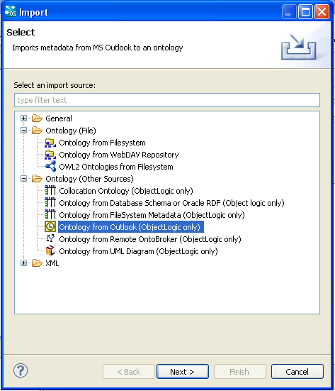

|

|
|
Importing from Outlook |
You can import personal user data (e-mails, contacts, tasks calendar) from Microsoft Outlook into OntoStudio.
| 1. | From the top level menu select : File -> Import.... |
| 2. | From Ontology (Other Sources) select -> Ontology from Outlook and then click on Next.  |
This creates an ontology containing the imported Outlook data.
The following form appears:
| 3. | Select the data you want to import, open MS Outlook and then click on Next. |
Only the selected data are imported.
The following form appears:
| 4. | Select the folder you want to import and click on Finish. |
Only the selected folder is imported.
The import is in progress:
The following popup window appears:

| 5. | Click on Yes to make sure that the import wizard can access your Outlook data sets. |
The imported ontology is visible in the Ontology Navigator:
NOTE: Unlike the other import functions, the Outlook Import does not establish a connection to its source data during runtime but imports all of the data from Outlook during the import process.